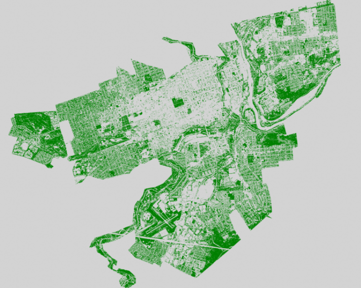

Remote sensing
NDVI and Vegetation Cover Allentown
This project uses NAIP aerial imagery to calculate the Normalized Difference Vegetation Index (NDVI) and map vegetation cover across Allentown, Pennsylvania. A Python workflow mosaics and clips the imagery, processes the red and near-infrared bands, and summarizes mean NDVI and vegetation cover by census tract.
Download Python notebook